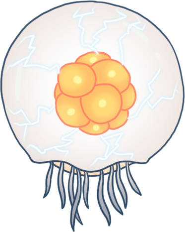

Hollow Knight Wikifandom

Bienvenido/a pequeño caballero, a este sitio informativo para aprender a derrotar a cada uno de los jefes de Hallownest, ahora embarcate en las profundidades para encontrar a cada uno de estos jefes
Lo primero que necesitamos para esta guia es poder ubicarnos por lo tanto, aqui tienes un mapa de Hollownest

Acatilados Aulladores
Gorb
"Dios onirico del mas alla"

Bocasucia
Principe Gris Zote
"Dios falso conjurado por los solitarios"

Grimm
"Dios viajero de la compañia"
Rey Pesadilla
"Dios de las pesadillas"

Cruces olvidados
Madre Gruz
"Somnoliento dios de la fertilidad"

Mawlek Incubador
"Dios solitario del nido"

Falso Caballero
"Dios furioso de los oprimidos"

Campeón Fallido
"Funesto dios de los remordimientos"

Sendero verde
Protectora Hornet
"Dios protector de una tierra que se desvanece"

Musgoagresor Gigante
"Incansable dios de los que trabajan juntos"

Sin Ojos
"Dios onirico del miedo y el alivio"

Rey Vengamosca
"Despiadado dios de los territorios"

Paramos Fungicos
Señores Mantis
"Nobles hermanas diosas del combate"

Anciano Hu
"Dios onirico de los sabios y los viajeros"

Canales Reales
Tremarmita
"Seductor dios de la maternidad"
Defensor del Estiércol
"Bondadoso dios de la valentía y el honor"

Defensor Blanco
"Bondadoso dios de la valentía y el honor"

Cañon nublado
Uumuu
"Extraño dios del conocimiento"
Ciudad de las lagrimas
Guerrero del Alma
"Atormentado dios del santuario"

Maestro de Almas
"Codicioso dios del alma"

Tirano de Almas
"Frenetico dios de la mortalidad"

Caballero Vigía
"Dioses centinelas de la torre"

El Coleccionista
"Dios alegre de la proteccion"

Cuenca antigua
Receptáculo Roto
"Cáscara rota de un dios vacio"

Familiar Perdido
"Dios perdido del abismo"

Cumbre de Cristal
Guardián de Cristal
"Brillante dios de la avaricia"

Guardian Furioso
"Brilante dios de la avaricia"

jardines de la Reina
Marmu
"Dios onirico de los jardines"

Señor Desleal
"Traicionero dios de la ira"

La Colmena
Caballero Colmena
"Dios vigilante del deber"

Limite del Reino
Domador de Dioses
"Galante dios de la arena"

Oblobble
"Amantes dioses de la fe y la devocion"

Markoth
"Dios onirico de la meditacion y la soledad"

Centinela Hornet
"Dios protector de una tierra que se desvanece"

Nido profundo
Nosk
"Siempre cambiante dios de los sin rostro"

Galien
"Dios onirico de los corazones heroicos"

Tierras de Reposo
Xero
"Dios onírico de la fe y la traición"

Hogar de Dioses
Nosk Alado
"Dios engañoso tomando la forma de un protector"

Hermanos Oro y Mato
"Leales dioses hermanos del aguijon"

Maestro de Pinturas Sheo
"Talentoso dios de artistas y creadores"

Gran Sabio del Aguijon Sly
"Dios astuto de la oportunidad"

Vasija Pura
"Poderoso dios de la nada"

Destello Absoluto
"Dios olvidado de la luz"

Hermanas de Batalla
"Dioses venerados de una orgullosa tribu"